What it is
The engineer is a program on your PC. It reads data from the game and talks to you through your headset: it warns you about faster cars, tells you when to pit, what to change at the stop and where you lose time. It answers questions by voice – hold the button on your wheel, speak, release.
The pit wall is a web page (PC or phone). The whole team sees the car status, rivals, weather and the stint schedule live, and can send the driver messages that the engineer reads out.
It works on every track, with every car and class in Le Mans Ultimate. You can drive alone (Solo mode) or as a team.
What you need
- Windows 10 or 11 and Le Mans Ultimate.
- A headset with a microphone and a free button on your wheel (or a keyboard key).
- Internet (the voice, speech recognition and the pit wall work online).
- A free Groq key – without it the AI doesn't work (better speech recognition, AI answers, translation of less common messages); how to get it: AI.
Installation (5 minutes)
- Download the
PitWallCrew_….zippackage from the FR Mods post on Patreon. Before unpacking: right-click the file → Properties → tick Unblock → OK (otherwise Windows may block the files). - Unpack it, e.g. to
Documents– you get aPit Wall Crewfolder with INSTALL.bat and aProgramfolder (program files, no need to open it). - Double-click INSTALL.bat (the installer). It downloads what's needed (a few minutes), asks about your team, microphone and radio button, and creates a Pit Wall Crew desktop icon.
- In LMU once: Settings → Gameplay → Enable Plugins = ON (without it the program can't see the game data).
The app window
The Pit Wall Crew icon opens the app. The engineer starts by itself and begins talking once you start the game and go on track.
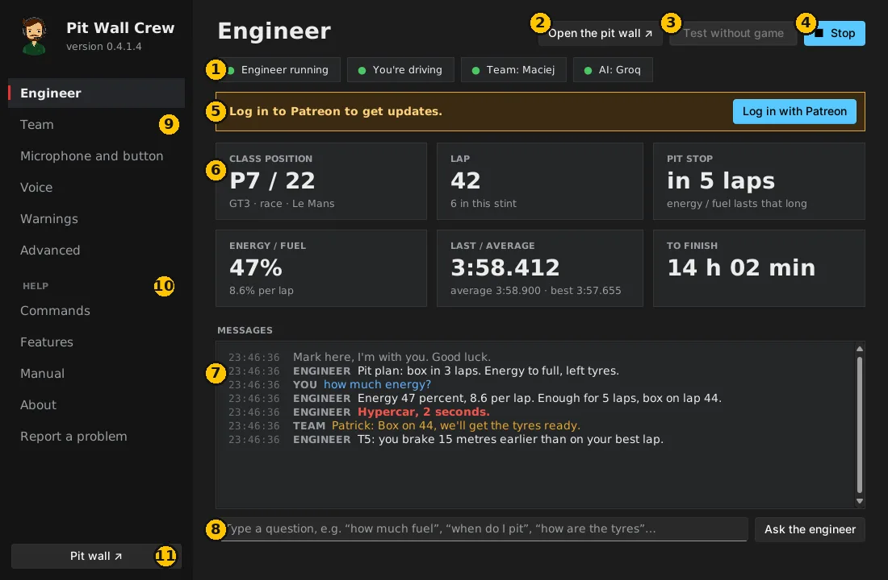
- Status: whether the engineer runs, sees the game (“You're driving” or “watching” when a teammate drives), team and AI connection. Green = OK.
- Test without game – a simulated race. Check the voice, microphone and pit wall without starting LMU.
- Start / Stop the engineer.
- Key numbers: position, lap, laps to the pit stop, energy or fuel, lap times, time to the finish.
- Messages – everything the engineer said, your questions and team messages. Red = urgent.
- Question box – type a question instead of speaking.
- Settings – team, microphone, voice, warnings (see below).
- Help – commands, features, manual, about and Report a problem.
- Pit wall – opens the team page in your browser.
Settings
After every change click Save and restart (bottom right).
Team
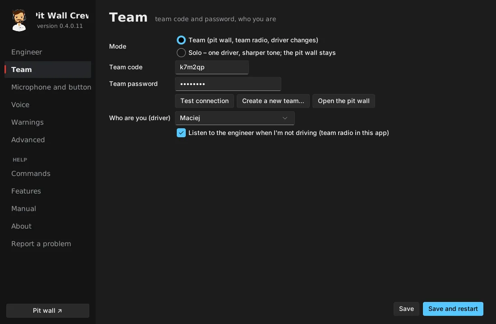
- Solo – you drive alone: nothing else to enter. The pit wall still works as your live view.
- Team – one person clicks Create a new team… (name and password) and gets a 6-character team code. The others enter that code and password, click Test connection and choose who they are.
- Share the code and password only privately – whoever knows them sees the car status and can message the driver.
- Listen to the engineer when I'm not driving – while a teammate drives you hear his engineer (team radio).
Microphone and button
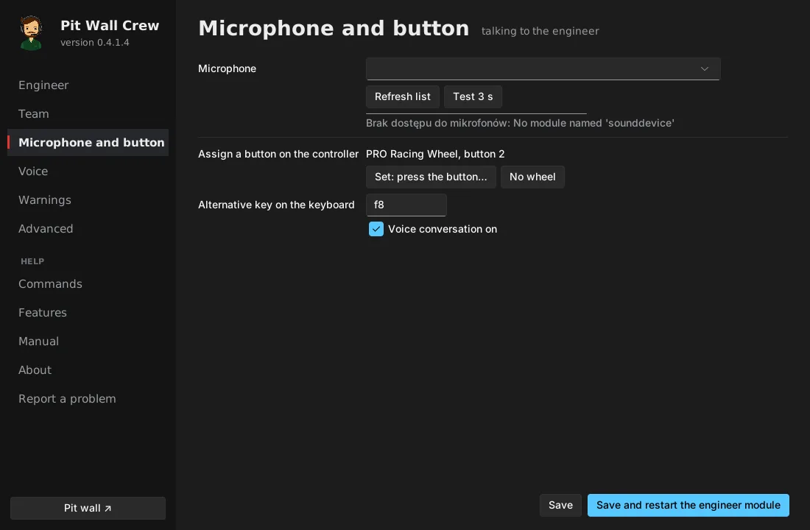
- Choose the microphone and click Test 3 s – say something and check the level moves.
- Set: press the button… and press the button on your wheel you'll use to talk. A keyboard key works too.
Voice
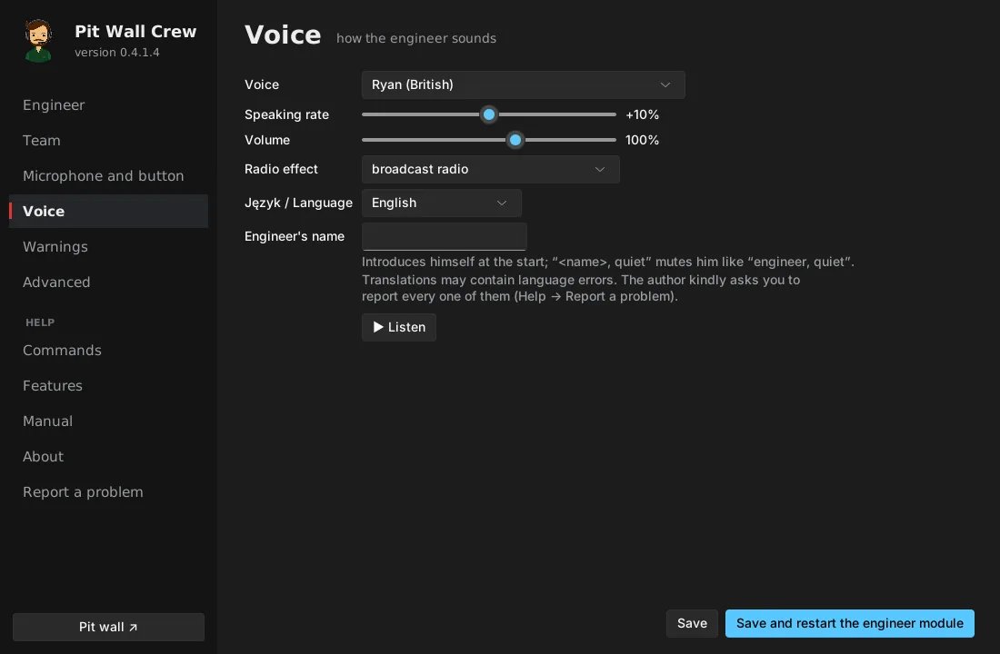
- Voice, speaking rate, volume, radio effect, language and the engineer's name. ▶ Listen plays a sample.
- If you give him a name (e.g. Mark), he introduces himself and “Mark, quiet” mutes him.
Warnings
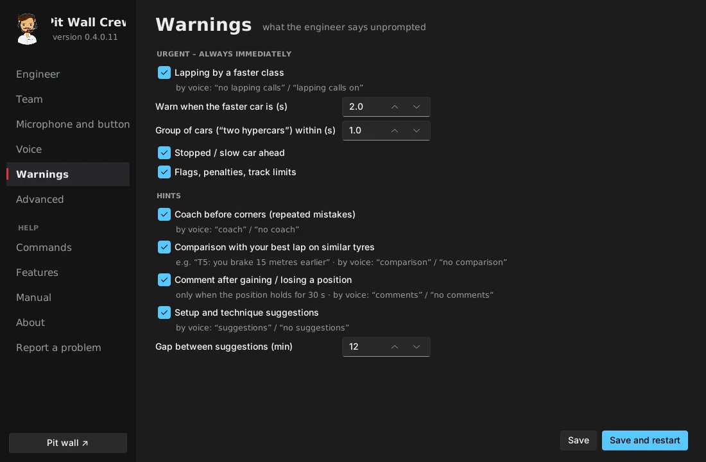
What the engineer says unprompted: lapping by faster classes (and from how many seconds), stopped cars, flags, coaching before corners, comparison with your best lap, comments after overtakes, setup suggestions. You can switch all of them on and off by voice while driving (e.g. “no coach”).
Advanced
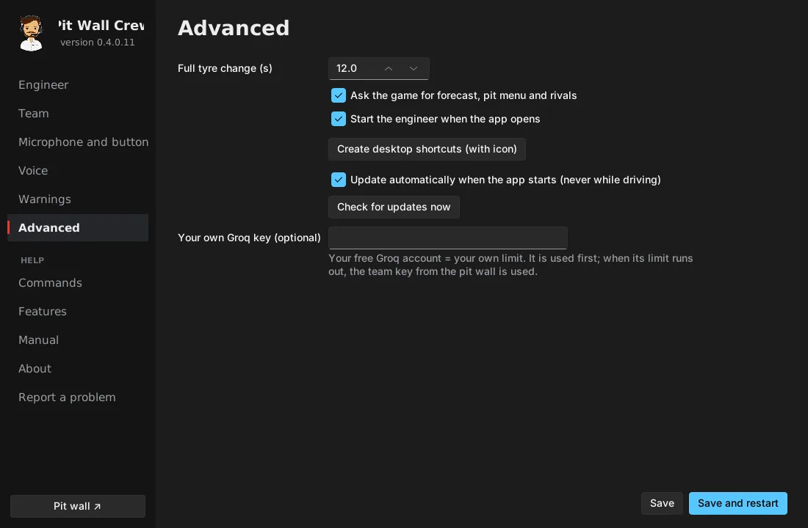
Full tyre change time, automatic engineer start, desktop shortcuts, updates and your own Groq key (optional – your own limit).
Talking to the engineer
Hold the button, speak, release. Pressing the button also interrupts what the engineer is saying.
Examples: “how much fuel?”, “when do I box?”, “which tyres do we change?”, “who's ahead?”, “where am I losing time?”, “what's the weather?”, “when will the first hypercar lap me?”, “quiet” (complete silence until the next press), “urgent only”, “repeat”.
The full list is in the app: Help → Commands.
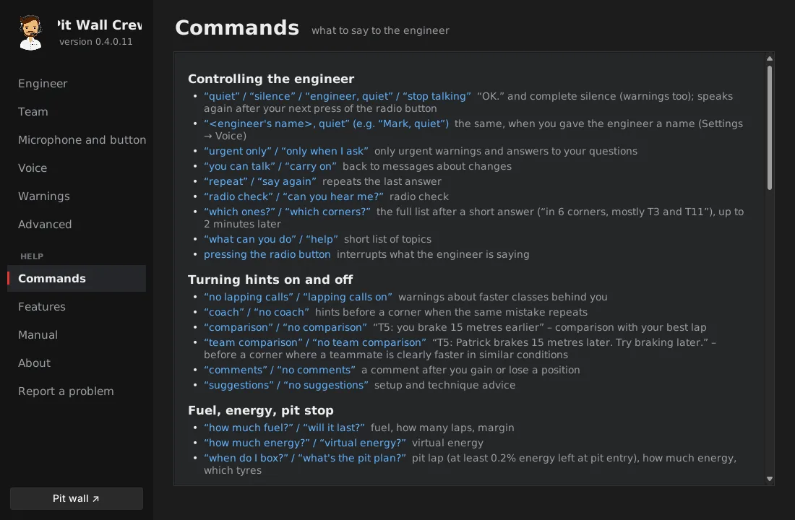
A question the program doesn't know goes to the AI (with a Groq key) together with the race data.
AI – free Groq key (once, 3 minutes)
- Go to console.groq.com and log in – a Google account is easiest. The account is free.
- On the left: API Keys → Create API Key, enter a name (e.g.
PWC) → Submit. - Copy the key right away (it starts with
gsk_) – Groq shows it only once. The key is free, with a daily limit. - Team (one person is enough): pit wall → Team → Team AI (Groq) → paste → Save key. The key reaches everyone in the team and only team members can see it.
- Driving solo or want your own limit: app → Advanced → Your own Groq key → paste → Save and restart.
- Done when the Engineer page shows a green AI: Groq.
Never send the key in a chat – paste it yourself.
Updates and Patreon
- New versions go to paying FR Mods patrons on Patreon.
- In the app, on the Engineer page click Log in with Patreon. Log in to Patreon in the browser and click Allow, then go back to the app. Only the Log out of Patreon button stays.
- Updates install themselves when the app starts – never while you drive. Your settings are kept.
- Testers enter a code from the author instead: Advanced → Tester code → Save and restart.
Without Patreon or a tester code the program keeps working, just without new versions.
Pit wall
Open it with the Pit wall button in the app or at zepansrpl-creator.github.io/Pit-Wall-Crew (log in with the team code and password; your phone remembers them). The language selector is at the top, and the ☀ / ☾ button switches between the light and dark look.
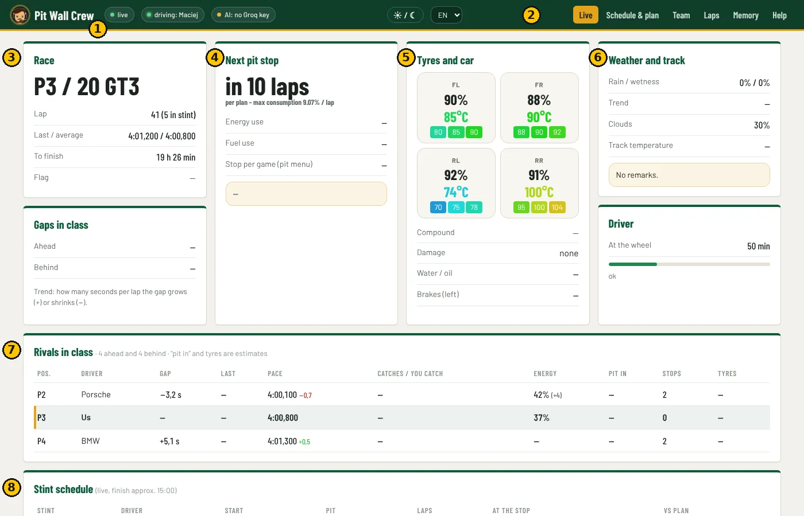
- Status: whether data is live, who is driving, whether the AI works.
- Tabs: Live, Schedule & plan, Team, Laps, Memory, Help.
- Race: class position, lap, lap times, time to the finish, flag.
- Next pit stop: in how many laps, energy and fuel use, what to do at the stop.
- Tyres and car: wear and temperatures of each tyre, damage, engine, brakes.
- Weather and track: rain, wetness, clouds, track temperature and the engineer's remarks.
- Rivals in class: gaps, pace, who catches whom, energy, predicted pit stop.
- Stint schedule: who drives, when the change is, what happens at the stop, how many minutes the schedule moved against the plan. With no plan for today it is generated automatically for the current driver – from the race length and the tyres available in the game.
Further down there are the track map with all cars and the team radio: “To driver” (the engineer reads the message), “Ask the engineer” (answer by voice), “Ask (text only)”, “To memory”.
On a phone
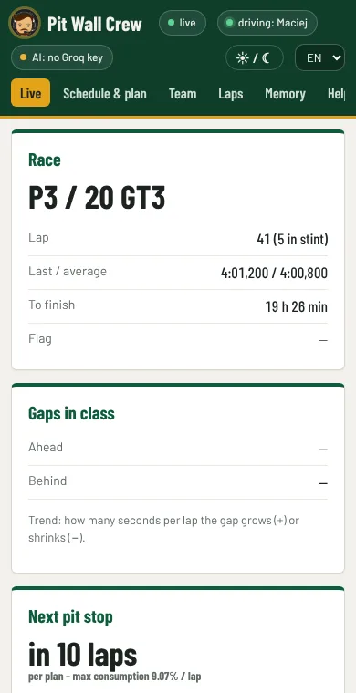
Team tab
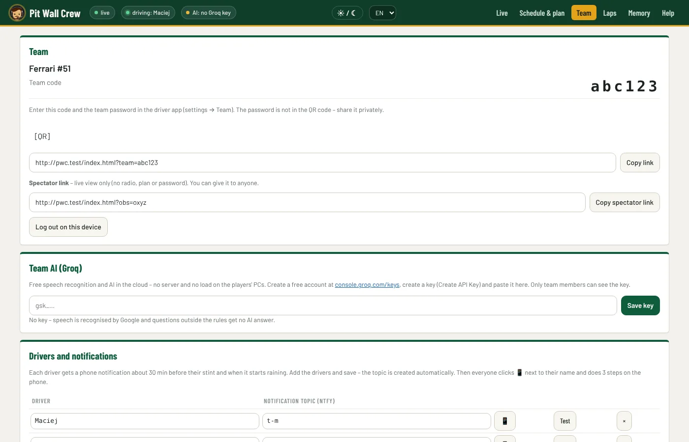
Team code and QR code for the wall, drivers with notification topics, the Groq key and a spectator link – live view only, no radio and no plan; you can give it to anyone.
Schedule & plan (before a long race, one person)
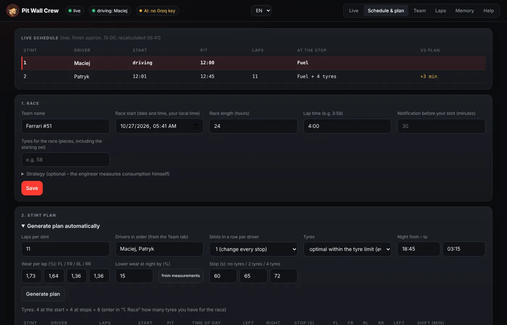
- 1. Race: start date and time, length, lap time, tyres for the race → Save.
- 2. Stint plan → Generate plan automatically: laps per stint, driver order, tyre wear (from measurements fills in the wear measured in your sessions), stop times → Generate plan. The program spreads the tyres so they wear as evenly as possible.
- Adjust the table if needed: driver from the list, laps, Left / Right = change the tyres on that side → Save plan. The counter shows whether you stay within the tyre allocation.
During the race the schedule recalculates itself from the real pace. The engineer pits and changes tyres according to the plan (unless a tyre wouldn't last or energy runs short). The plan applies to a race of the length entered in “1. Race”.
Phone notifications (every driver, 2 minutes)
- Install the free ntfy app (Google Play / App Store).
- On the pit wall: Team → click 📱 next to your name – your topic and QR code appear.
- In ntfy tap +, enter the topic and Subscribe (or scan the QR code).
- Click Test next to your name – “Pit Wall Crew – test” arrives on your phone.
The notification comes about 30 minutes before your stint, a second one if the stint moves by 10 minutes or more, and when it starts raining.
Long race (e.g. 24 h)
- The driver in the car keeps Pit Wall Crew running for the whole stint – his app sends data to the wall and the notifications.
- The others may turn off the game, the app and the PC. After the phone notification start the PC, LMU and Pit Wall Crew before you get in the car.
- The plan, schedule, messages, team memory and the handover briefing are in the team database – the program fetches them itself.
Rehearsal before the race (15 minutes)
- Everyone starts Pit Wall Crew – green Team and AI: Groq.
- One driver clicks Test without game. The others open the pit wall – data should be “live”.
- The driver asks by voice “how much fuel?” – everyone hears the answer.
- Send “To driver” from the wall – the engineer reads the message out.
When something doesn't work
| Symptom | What to do |
|---|---|
| “Waiting for LMU” although the game runs | LMU: Settings → Gameplay → Enable Plugins = ON, then restart the game. |
| The engineer doesn't hear me / “I can't hear you” | Microphone and button → Test 3 s. Check the mute on the headset and Windows → Privacy → Microphone. |
| “Wrong team code or password” | Team → correct it → Test connection → Save. |
| Pit wall: “no data from the game” | The driver's app must be running with a green “Team”. |
| “AI: Groq – wrong key” | Paste the key again (pit wall → Team → Team AI). |
| Every message is heard twice | The program runs twice: close the app, end “pythonw” in Task Manager, start it once. |
| No notifications | Race start and drivers in the plan, topic in ntfy, Test button; the app running on someone's PC. |
| The game stutters | Usually not enough graphics memory: lower textures, fewer visible cars and shadows, close other programs. |
| Windows blocks files | Before unpacking: right-click the package → Properties → Unblock. |
Report a problem or a suggestion
In the app: Help → Report a problem, on the pit wall: the Help tab. It goes straight to the author. With your consent the app can automatically send a report when it crashes (no voice recordings, keys or passwords) – you switch this on or off on the same page. Details: Privacy.
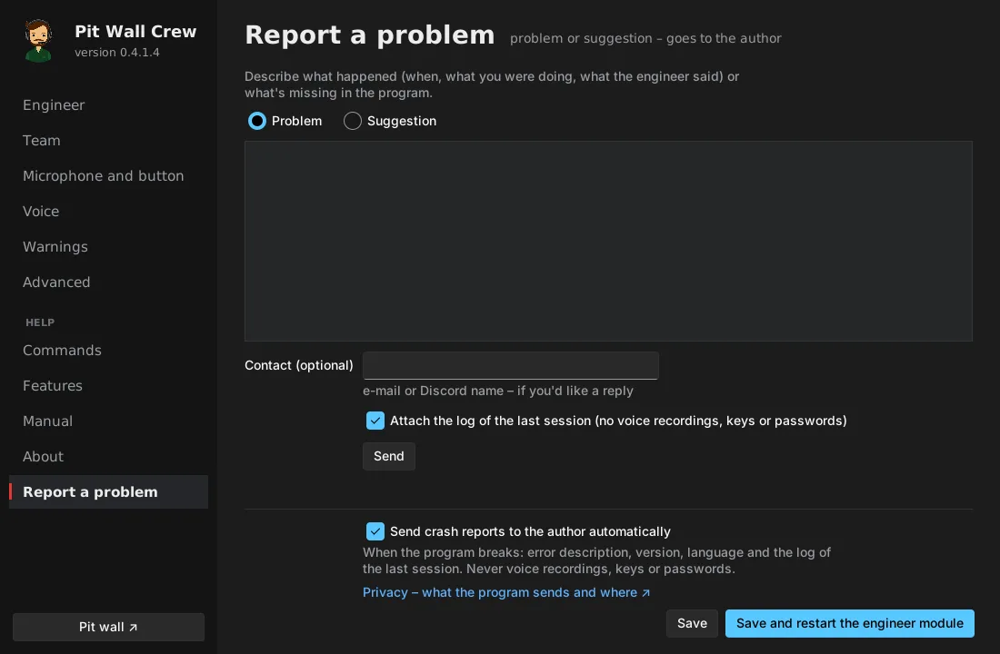